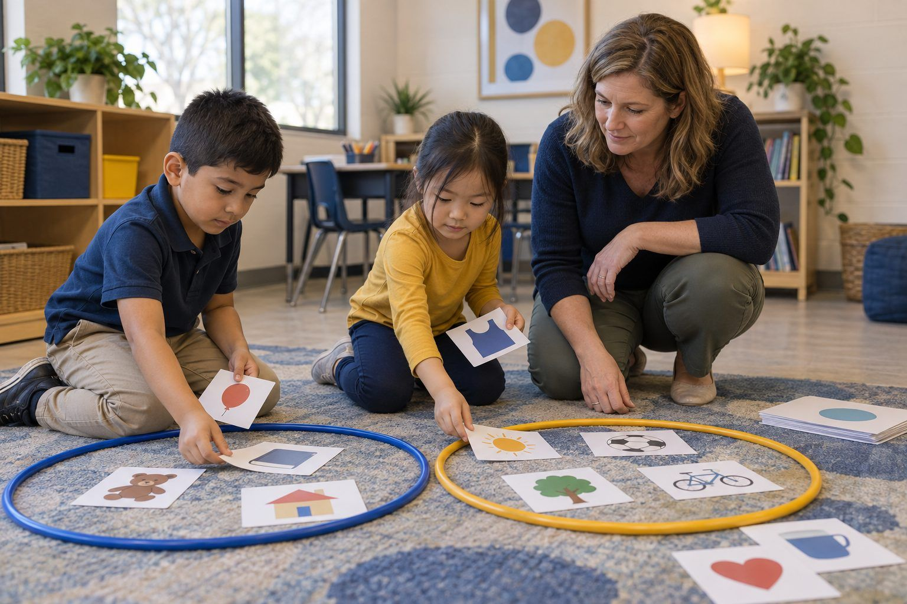

Học tập của học sinh · Lớp K–2 · 30 phút
Giờ Màn hình, Giờ Xanh
Các em phân loại những hoạt động hằng ngày, để ý xem cơ thể và cảm xúc của mình thay đổi thế nào khi ngồi yên và khi vận động, rồi lập kế hoạch cân bằng cùng gia đình, qua đó hiểu rằng màn hình không xấu và lựa chọn của mình mới là điều quan trọng.
Các em nghe người lớn lo lắng về màn hình rất nhiều. Bài học này mang đến cho các em điều hữu ích hơn nỗi lo: biết để ý và biết lựa chọn. Các em phân loại thẻ hoạt động thành Giờ màn hình, Giờ xanh (không có màn hình) và Cả hai, và khám phá ra rằng màn hình có thể giúp mình học, sáng tạo và kết nối với những người mình yêu thương. Sau đó các em làm một hoạt động Lắng nghe Cơ thể ngắn: ngồi yên nhìn chăm chú vào một "màn hình" bằng giấy, rồi vận động, và để ý xem mắt, cơ thể và cảm xúc của mình thay đổi ra sao. Cuối cùng các em vẽ một kế hoạch cân bằng để mang về nhà hoàn thành cùng gia đình. Thông điệp rất trung thực: bản thân màn hình không xấu cũng không tốt; điều quan trọng là mình dùng nó như thế nào và dành thời gian cho những việc gì khác nữa.
Trong bộ tài liệu này
- Phiếu A: Màn hình hay Xanh? (phân loại thẻ)
- Phiếu B: Lắng nghe Cơ thể Em (sơ đồ tổ chức)
- Phiếu C: Kế hoạch Cân bằng của Gia đình Em (phiếu bài tập)
- Đáp án cho người điều phối (trang cuối)
Chỉ báo ELE của TCEA
- S4.3 Em nhận thức được điểm mạnh trong học tập và những điểm cần cải thiện của mình.
- S4.1 Em biết cách tự chịu trách nhiệm về việc học của mình.
- S4.2 Em có thể đặt mục tiêu khả thi và theo dõi sự tiến bộ của mình.
- S3.2 Em có thể truyền đạt ý tưởng của mình một cách rõ ràng cho người khác.
Hướng dẫn đầy đủ cho người điều phối: mglearn.github.io/eles/vi/activities/screen-time-green-time.html
Phiếu A cho Giờ Màn hình, Giờ Xanh
Màn hình hay Xanh?
Đọc to từng thẻ. Đó là giờ màn hình, giờ xanh (không có màn hình), hay cả hai? Có những thẻ có thể có nhiều câu trả lời đúng. Hãy nói vì sao nhé!
Giờ màn hình
Giờ xanh
Cả hai
Phiếu A cho Giờ Màn hình, Giờ Xanh
Màn hình hay Xanh?: thẻ cần phân loại
Cắt rời các dải giấy. Xếp từng dải vào đúng ô trên tấm phân loại và sẵn sàng giải thích lý do.
Chơi đuổi bắt ngoài sân vào giờ ra chơi
Xem phim hoạt hình trên máy tính bảng
Gọi video cho bà để khoe chiếc răng mới mọc
Nhảy theo một video ca nhạc
Xếp một tòa tháp bằng khối gỗ cùng bạn
Vẽ tranh bằng bút sáp màu
Chơi trò chơi đếm số trên máy tính bảng
Cùng người lớn tìm hình một con ếch thật, rồi ra ngoài tìm một con
Đọc một cuốn sách giấy trước giờ đi ngủ
Chụp ảnh một bông hoa khi đi dạo cùng gia đình
Phụ nấu bữa tối
Làm theo video để học cách gấp máy bay giấy, rồi phóng thử
Phiếu B cho Giờ Màn hình, Giờ Xanh
Lắng nghe Cơ thể Em
Sau mỗi phút, vẽ một khuôn mặt hoặc viết một từ vào mỗi ô. Không có câu trả lời nào sai. Chỉ cần để ý thôi!
| Sau khi… | Mắt em cảm thấy | Cổ và lưng em cảm thấy | Cơ thể em muốn cựa quậy | Cảm xúc của em là |
|---|---|---|---|---|
| 1 phút ngồi yên với màn hình tưởng tượng | ||||
| 1 phút vận động cơ thể | ||||
| Điều gì đã thay đổi? |
Phiếu C cho Giờ Màn hình, Giờ Xanh
Kế hoạch Cân bằng của Gia đình Em
Bắt đầu làm ở trường. Hoàn thành ở nhà cùng gia đình. Lời nhắn gửi gia đình: màn hình không xấu; chúng tôi đang luyện tập cách lựa chọn, để ý và cân bằng. Kính mong quý phụ huynh cùng con trò chuyện về kế hoạch và giúp con điền vào ô cuối cùng.
Vẽ một hoạt động có màn hình em yêu thích, giúp em học, làm ra đồ vật, hoặc trò chuyện với người em yêu thương.
Vẽ hai hoạt động giờ xanh (không có màn hình) em muốn làm trong tuần này.
Tín hiệu dừng lại của em: Em biết đã đến lúc nghỉ ngơi khi…
Khi đến lúc dừng, em có thể nói: "Thêm một phút nữa thôi, rồi con sẽ ___."
Ở nhà cùng gia đình: một khoảng thời gian hoặc một nơi không dùng màn hình mà cả nhà cùng chọn (như bữa tối hoặc giờ đi ngủ):
Chỉ dành cho người điều phối, Giờ Màn hình, Giờ Xanh
Đáp án và ghi chú
Phiếu A: Màn hình hay Xanh?
| Mục | Xếp loại | Lý do |
|---|---|---|
| Chơi đuổi bắt ngoài sân vào giờ ra chơi | Giờ xanh | Không có màn hình, và cả cơ thể em đều vận động. |
| Xem phim hoạt hình trên máy tính bảng | Giờ màn hình | Có màn hình và cơ thể ngồi yên. Vui đấy, và là hoạt động nên cân bằng lại. |
| Gọi video cho bà để khoe chiếc răng mới mọc | Giờ màn hình | Màn hình giúp mình kết nối với những người mình yêu thương. |
| Nhảy theo một video ca nhạc | Cả hai | Em dùng màn hình, và cơ thể em đang vận động. |
| Xếp một tòa tháp bằng khối gỗ cùng bạn | Giờ xanh | Không có màn hình; đôi tay và ý tưởng cùng làm việc với nhau. |
| Vẽ tranh bằng bút sáp màu | Giờ xanh | Không có màn hình; em đang tạo ra một thứ gì đó. |
| Chơi trò chơi đếm số trên máy tính bảng | Giờ màn hình | Màn hình giúp em học. |
| Cùng người lớn tìm hình một con ếch thật, rồi ra ngoài tìm một con | Cả hai | Màn hình giúp em học, rồi em đi khám phá. |
| Đọc một cuốn sách giấy trước giờ đi ngủ | Giờ xanh | Không có màn hình; một cách nhẹ nhàng để chuẩn bị đi ngủ. |
| Chụp ảnh một bông hoa khi đi dạo cùng gia đình | Cả hai | Màn hình giúp em ghi nhớ một thứ em thấy khi ở ngoài trời. |
| Phụ nấu bữa tối | Giờ xanh | Không có màn hình; em đang giúp đỡ gia đình. |
| Làm theo video để học cách gấp máy bay giấy, rồi phóng thử | Cả hai | Màn hình dạy em, rồi em tự làm và chơi. |